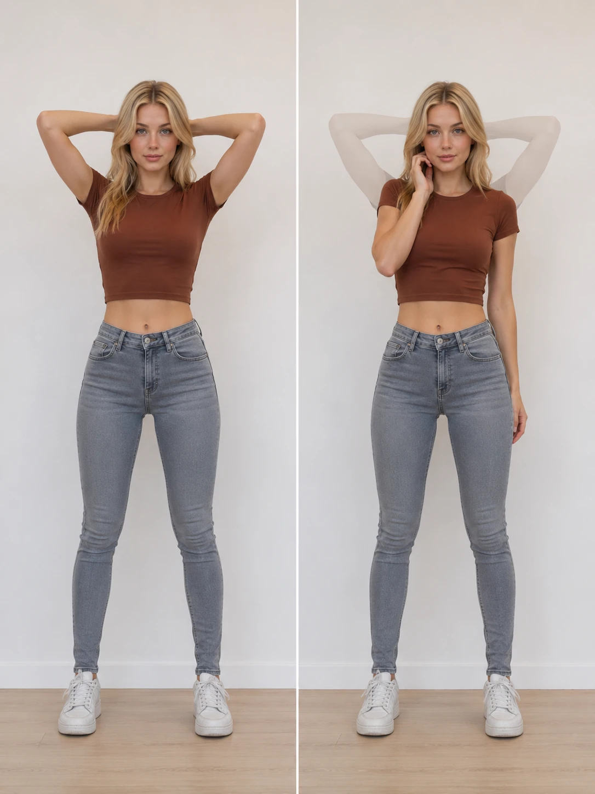
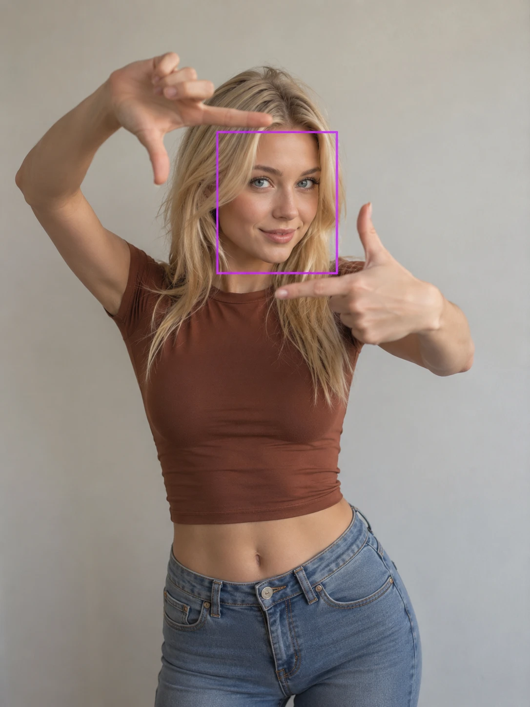
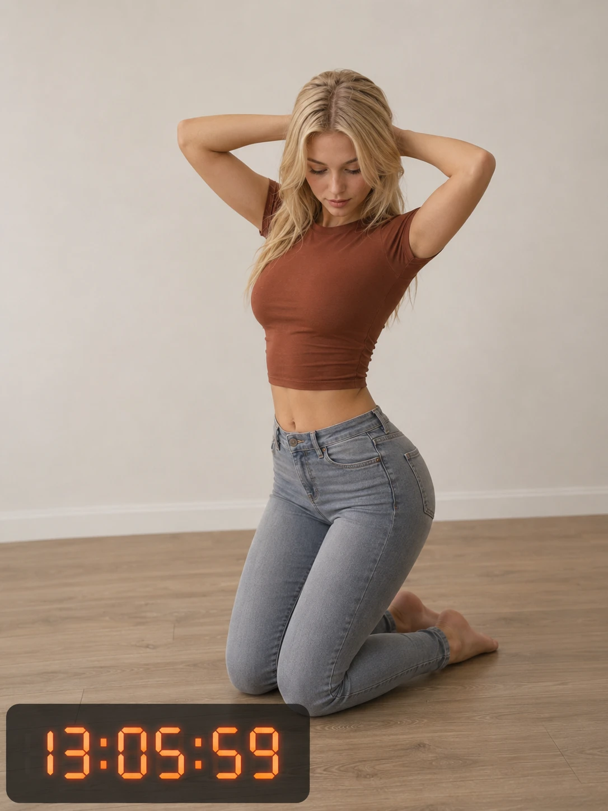
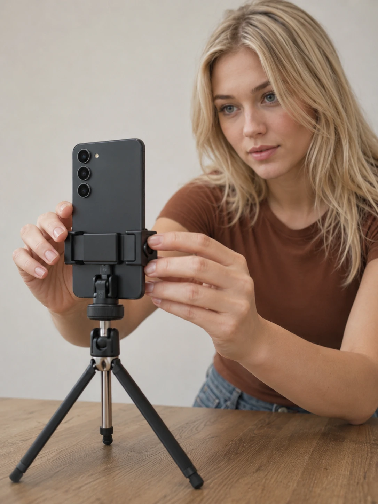

A detailed guide to the PoseGuard cornertime app for Android: how a session runs,
how on-device pose tracking with MediaPipe detects pose drift and sudden movement,
how face direction checks and timer penalties work, and how to set up the phone.
Every PoseGuard session goes through the same stages. The app speaks each
instruction aloud, so the screen does not need to be visible during the session.
Configure the session
Choose an exact duration or a random time within a range. In random mode the
real duration stays hidden and is revealed only after the session. Pick the face
direction rule, sensitivity presets, penalties, and whether to record a timelapse.
Device stabilization
After pressing Start, PoseGuard reads the phone gyroscope and waits until the
device has been completely still for 4 seconds. A moving camera would look like
a moving body, so tracking never starts on a shaking phone.
Take position
A 10-second countdown gives time to step into the frame and take the pose.
If shoulders, elbows, hips, and knees are not all detected, the session does not
start: “Camera cannot see the full body”.
Reference pose is captured
The current pose becomes the reference. The timer starts and the voice says
“Time started. Hold your position”.
Holding the pose
Every camera frame is compared with the reference. Live Drift and Motion gauges
at the bottom of the screen show how close the movement is to the threshold.
Violations trigger a voice warning and, optionally, extra time on the timer.
Victory or failure
When the timer reaches zero the session ends in Victory. Reaching the maximum
number of violations ends it in failure. The summary screen shows the initial and
actual timer, violations by type, and offers to save the timelapse video.
Under the hood
The pose tracking pipeline
All processing runs on the Android device. The machine learning models are bundled
inside the APK, so nothing is downloaded at runtime and no camera frames leave the
phone. Each frame passes through these stages:
Cameralive video frames
Pose Landmarker33 body landmarks
Smoothingremoves jitter
Movement analysisdrift and motion scores
Session ruleswarnings and penalties
MediaPipe Pose Landmarker
Body tracking uses Google’s MediaPipe Pose Landmarker. For every camera frame it
finds 33 body landmarks with their position and visibility. Two models are included:
Heavy for best accuracy (default) and Full for faster processing on
weaker devices.
GPU acceleration
In Auto mode PoseGuard uses the GPU when the device supports it and falls back to the
CPU otherwise. The choice is remembered for the device and can also be set manually.
Smoothing
Raw landmarks jitter slightly even when a person stands perfectly still. PoseGuard
smooths them with a One Euro Filter, so sensor noise is not mistaken for movement
while real movement is still detected quickly.
Hidden joints
If hands, arms, or legs are hidden in the chosen pose, for example hands behind the
head, PoseGuard notices this before the timer starts and ignores the guessed position
of those joints instead of counting false violations.
Pose tracking
How movement is measured
PoseGuard compares 12 key points: shoulders, elbows, wrists, hips, knees, and ankles.
Positions are measured relative to the size of the body itself, so the thresholds
work the same whether the phone is 2 or 4 meters away.
Pose drift
How far the current pose is from the reference. Drift must stay above the threshold
for a moment, so a brief wobble is ignored but slowly changing the pose is not.
Sudden movement
How fast the body moves between frames. Sustained motion is a violation, and a
sharp jerk counts immediately.

Sensitivity presets
Both thresholds are set as a fraction of body size, so they work the same at any
distance from the camera. Pick them in the app settings.
Pose deviation tolerance (drift)
Preset
Threshold
Very easy
20% of body size
Easy
18%
Normal (default)
16%
Strict
14%
Very strict
12%
Motion sensitivity (sudden movement)
Preset
Threshold
Very low
8% per frame
Low
6%
Normal (default)
4%
High
3%
Very high
2%
Getting false violations? Choose a softer preset first, then improve lighting and make
sure the whole body is in the frame.

Optional rule
Face direction
Optional face tracking with MediaPipe Face Detector checks whether the user faces
the camera or looks away from it. Choose “Face to camera” or “Face away from
camera”; breaking the selected rule counts as a violation.

Session timer
Timer penalties
Instead of ending the session after the first mistake, PoseGuard can add extra
minutes to the timer. Penalties are set separately for the first, second, third,
and every following violation.
Violations, penalties, and limits
PoseGuard counts four types of violations, each with its own voice warning:
Pose drift
“You changed pose”
Sudden movement
“You moved”
Face direction
“You looked at the camera” or “You turned away”
Out of frame
The body leaves the frame
Default penalty schedule
1st violation+1 min
2nd violation+3 min
3rd violation+3 min
4th violationSession failed
All values are configurable: penalties from 0 to 9999 minutes, the maximum number of
violations from 0 to 9999, and the minimum interval between counted violations from
0 to 30 seconds (5 seconds by default), so one long movement is not counted several
times. Penalties can also be turned off completely.
Feedback
Voice, sounds, and timelapse
Custom reactions for 10 events
Every event, from “Place the device still” to “Time is up” and each violation type,
can use its own reaction: a Text-to-Speech voice with an editable phrase, your own
audio file, a generated PCM tone (frequency, duration, channel, fade, single tone or
double beep), phone vibration, or nothing.
Timelapse recording
PoseGuard can record the session as a timelapse: 10× speed, 30 fps, H.264 MP4. After
the session the app asks whether to save it; saved videos go to
Movies/PoseValidator on the device and are never uploaded.
Intiface Central (Online APK)
The Online APK connects to Intiface Central and controls compatible devices
through buttplug.io. Vibration can run in the background while the pose is held and
react to violations with a vibration or a pause, as a constant signal or pulses with
adjustable strength.
Six languages
The app interface and voice prompts are available in English, Russian, Spanish,
Italian, German, and French.

Phone setup
How to set up the phone
Place the Android device on a tripod or another stable support in portrait
orientation. The gyroscope check will not start the session until the phone is still,
and any camera shake during the session can look like body movement.
Choose a camera angle where the full body fits inside the frame with some margin.
Remove extra objects that could block the view.
Good, even lighting helps the model see the body silhouette. Avoid dark rooms, strong
backlight from a window behind the subject, and cluttered backgrounds when possible.
How to choose a pose that tracks well
PoseGuard can be used with different static poses, but tracking works best when
important body points are visible. Shoulders, elbows, wrists, hips, knees, and
ankles should not be heavily hidden behind the body or outside the frame.
Simple and clearly visible poses are usually more reliable than complex poses
where arms or legs overlap heavily. Hands behind the head or back are fine, but the
elbows should stay visible. Loose or bulky clothing makes pose
tracking harder, while close-fitting clothing gives the app a clearer body shape.
If you get false violations, try a softer sensitivity preset, better lighting, moving
the phone farther away, simplifying the pose, or switching to the Heavy model.
Offline APK
No Android INTERNET permission: Android itself prevents the app from accessing the
network. Recommended unless you need device integrations.
Online APK
Same pose tracking plus optional Intiface Central / buttplug.io integration. Camera
analysis still runs on the device. Compare versions and privacy.
Requirements
Android
11 or newer
Processor
ARM64, 8 cores recommended
Memory
8 GB RAM recommended, about 1.5 GB free during a session
GPU
OpenGL ES 3.1+ for GPU acceleration (optional)
Sensors
Camera; gyroscope for stabilization (timed fallback without it)
Real-time computer vision is demanding. On weaker phones choose the Full model and keep
acceleration on Auto.
Who this app is for
PoseGuard is useful when a session needs more than a regular timer. It is made
for stillness enforcement, posture training, pose-holding practice, cornertime,
and consensual power exchange scenarios where a strict static pose should be
held for a configured amount of time.
The app is currently under development, so behavior, default values, and available
features may change between releases.
Open source and APK downloads
PoseGuard is free software licensed under GPL-3.0. It is written in Kotlin with
Jetpack Compose, CameraX, and MediaPipe Tasks Vision; the Online APK uses buttplug4j
for Intiface Central.